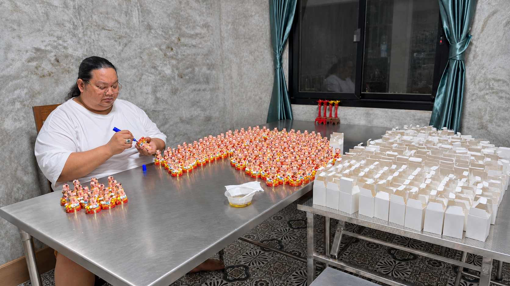
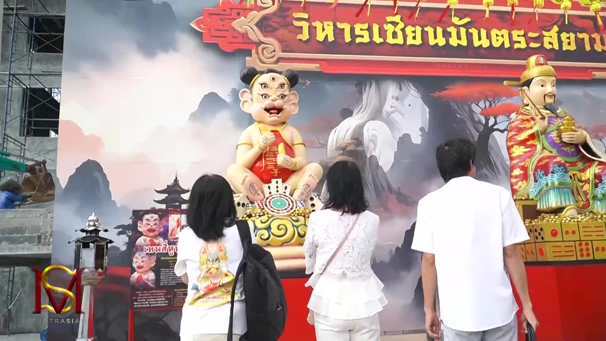

The beauty of the art
The form, colour and details you can see and touch.
THE MEANING OF DEVOTION
MUJEEN expresses devotion through contemporary art. Each figure in the collection undergoes rituals and consecration conducted by Ajarn Khaek Muntra Siam according to Maoshan Taoist feng shui teachings. After devotional materials are placed inside, he personally inscribes talismans and sacred characters onto each figure again.
How each figure is prepared
A MEANINGFUL BEGINNING
Life brings moments when we wish to begin again, find our footing or move forward with confidence. For those who practise devotion, a meaningful figure may serve as a reminder of their goals and the intentions they wish to keep each day.
Bringing a figure home can mark a new chapter—one you shape through your own decisions and actions.
For MUJEEN, artistic form and devotional meaning belong together. Each figure expresses the collection’s distinctive character, while rituals, consecration, devotional materials and inscriptions by Ajarn Khaek Muntra Siam bring the dimension of Maoshan Taoist feng shui practice to the work.
The form, colour and details you can see and touch.
Maoshan Taoist feng shui teachings Ajarn Khaek applies in rituals and inscriptions for MUJEEN figures.
The connection formed through devotion, and the stories you choose to keep with you and your family.
THE PREPARATION
Figures in the MUJEEN collection undergo rituals and consecration conducted by Ajarn Khaek Muntra Siam according to Maoshan Taoist feng shui teachings. After devotional materials are placed inside, he personally inscribes each figure again.
Ajarn Khaek Muntra Siam conducts rituals and consecration for MUJEEN figures according to Maoshan Taoist feng shui teachings.
Materials placed inside the figure form part of its preparation and devotional meaning.
After the materials are placed inside, Ajarn Khaek personally inscribes talismans and sacred characters onto each figure again.

After the materials are placed inside, Ajarn Khaek personally inscribes talismans and sacred characters onto each figure again.
MAOSHAN · 茅山
Ajarn Khaek Muntra Siam applies the Maoshan Taoist feng shui teachings he has received and developed to rituals, consecration and the preparation of devotional materials for figures in the MUJEEN collection.
After the materials are placed inside, he personally inscribes talismans and sacred characters onto each figure again. His teachings and ritual practice add a devotional dimension to MUJEEN’s distinctive artwork.
THE WORLD OF MUJEEN
At Wihan Sian Muntra Siam


A PLACE OF DEVOTION
A place to pay respects and offer prayers
at Wihan Sian Muntra Siam.
These photographs record moments of devotion at Wihan Sian Muntra Siam during its construction. Construction of the temple is now complete.
DEVOTION AT HOME
Wihan Sian Muntra Siam is a place to pay respects to the deities and experience a shared atmosphere of devotion. For daily worship at home, MUJEEN offers figures from its own collection, providing a personal focal point for reflection, intention and prayer.
For devotees, prayers for auspiciousness can be a source of encouragement. Choose a figure whose associations connect with what matters to you—business, work, finances or negotiation—and carry that intention into your actions.
Discover the three deities’ meaningsA FAMILY KEEPSAKE
A devotional figure can hold memories of a chapter in life, an intention at a new beginning, or a family bond. With appropriate care, the artwork and those stories can be passed to the next generation.
Meaning can deepen through the place you give it in everyday life.
CHOOSING WITH UNDERSTANDING
MUJEEN offers its figures to those who understand their origins and value their devotional meaning. Take time to read, ask and find a connection. A reservation is the final step in getting to know a figure.
Reservation periods
Reservations are accepted only during periods announced by MUJEEN. If a figure resonates with you, explore its story and enquire about reservation dates as you consider bringing it home.
If a figure interests you, we would be glad to share its story, preparation and devotional guidance, along with information about reservation periods, so you can make an informed choice.
A devotional figure from MUJEEN, with rituals and consecration conducted by Ajarn Khaek Muntra Siam, devotional materials placed inside, and his additional personal inscriptions on each figure.
Discuss the story and reservationsLINE · @mujeen